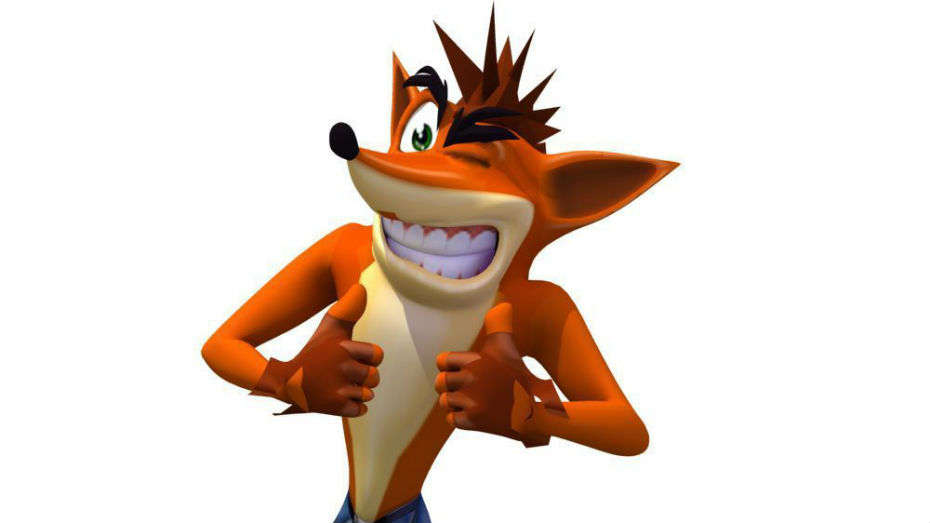
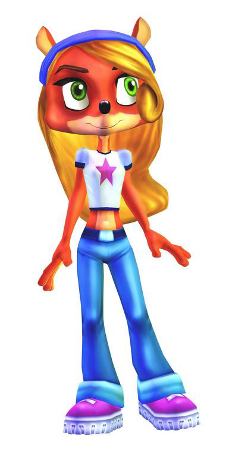
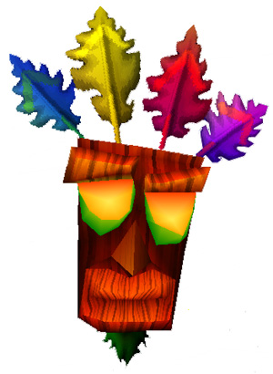
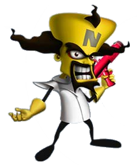
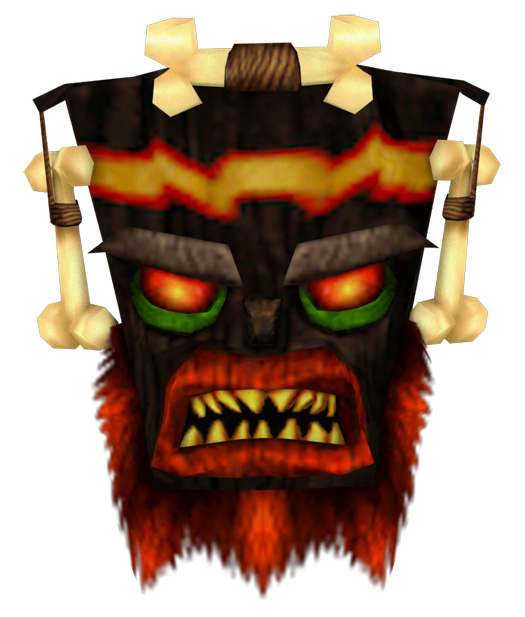

|  | Crash BandicootEsse é o grande protagonista da serie crash bandicoot, onde muita gente diz que ele é uma raposa/ lobo/ cachorro mais não é verdade, ele é um bandicoot.Ele ama comer frutas wumpa e tem paixão por dormir, ou seja com ele é só vida mansa e muita comida. |
|  | Coco BandicootCoco bandicoot é a irmã mais nova de crash porem mais inteligente.Coco foi criada de cortex assim como crash, apesar de mostrar direto ela conversando com crash sem nenhuma afirmação disso, mas se ela é sua irmã, é essa a resposta. |
|  | Aku AkuEle é uma mascara com peninhas na sua cabeça, que só no crash 3 ele fala, e no Crash of the titans e mind over mutant ele teve concerteza um papel muito mais importante.seu nome vem da ilha da pascoa que significa guia espiritual, onde é na verdade uma pedra esculpida que tem uma cara que parece mais um tiki, e existe uma mascara dele, mas apenas ja existido por uma história antiga sobre a ilha da pascoa |
|  | Neo CortexEsse é o grande protagonista da serie crash bandicoot, onde muita gente diz que ele é uma raposa/ lobo/ cachorro mais não é verdade, ele é um bandicoot.Ele ama comer frutas wumpa e tem paixão por dormir, ou seja com ele é só vida mansa e muita comida. |
|  | Uka UkaUka uka tem a fama de xingar todos de imcompetente.. principalmente cortex,em crash bandicoot 3 a continuação do 2 foi que os pedaçoes da nave do cortex saiu por aí,e um dos pedaços atingiu onde dormia o malignissimo uka uka ao contrario o nome de aku aku, na qual é seu irmão, mas eles se odeiam. |
os conteudos foram extraidos do site: Personagens Crash